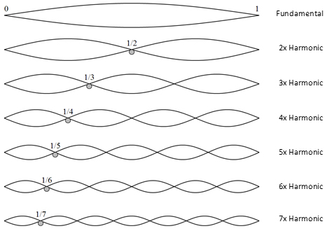

Technology has changed the way people make music. It started with a phonograph in 1877, invented by Thomas Edison that used complex moving parts, and now companies like Hexachords use AI in their software called Orb Producer Suite where all we have to do is click one button. Literally one button and you get everything ready for you, from melodies to chords to drum loops and so on.
Introduction
One of the difficult aspects of the study of electronic music is the accurate description of the sounds used. With traditional music, there is a general understanding of what the instruments sound like, so a simple notation of “violin” or “steel guitar” will convey enough of an aural image for study or performance. In electronic music, the sounds are usually unfamiliar, and composition may involve some very delicate variations in those sounds. In order to discuss and study such sounds with the required accuracy, we must use the tools of mathematics. There will be no proofs or rigorous developments, but many concepts will be illustrated with graphs and a few simple functions.
The first thing musicians must do before they can play together is “tune.” For musicians in the standard Western music tradition, this means agreeing on exactly what pitch (or what frequency) is an”A,” what is a “B flat,” and so on. Other cultures not only have different note names and different scales, but they may even have different notes—different pitches—based on a different tuning system. In fact, the modern Western tuning system, which is called equal temperament, has (relatively recently) replaced other tuning systems that were once popular in Europe. All tuning systems are based on the physics of sound. But they are all also affected by the history of their music traditions, as well as by the tuning peculiarities of the instruments used in those traditions.
The Science of Tuning
Many musical instruments, including pianos, guitars, and violins, make a sound when strings are plucked, hit, or set in vibration in some other way. When you pluck a string, it vibrates at a certain frequency according to its length and tension, and these vibrations are sensed by the ear and relayed to the brain. If you pluck a bunch of strings together, it can either sound nice or downright awful, depending upon the frequency relationships among the strings.
A guitarist may play an open string, say G, and then place a finger on a fret to create a sound with a higher pitch, say G#, A, or B. What is happening is that the player is shortening the vibrating part of the string to produce a higher pitch. This is based on the fundamental fact that shorter (skinner or tighter) strings produce higher pitches. Similar facts are true with woodwind, percussion, and other types of instruments in general: the smaller the vibrating portion gets, the higher the sound becomes. That is why, for instance, a tuba is bigger than a French horn, and a Contrabass Flute is longer than a Soprano Flute.

Brief Explanation
Suppose we pluck a string of a certain length and create a wave, a vibration of the air. The string will move up and down in oscillation. Each wave, whether it is a simple water wave, sound, earthquake, radio wave, microwave, or light wave, has a frequency, which measures how many times the oscillation occurs in a given time period, such as one second. For sound, the frequency is measured in “cycles per second” (abbreviated “cps”), sometimes called “hertz” (denoted “Hz”). Frequency is what determines the pitch of the sound generated by the vibration.
When a string is plucked and set in motion, the entire string vibrates, as shown in the picture above. The frequency created by the whole string is referred to as the “fundamental frequency” of the string. It generates the lowest sound the string can possibly make. This is equivalent to playing an open string on the guitar. If the guitar is tuned in the standard way, the sixth string (the thickest one, located on the top) is the E string, meaning that its fundamental frequency corresponds to the pitch we call an “E”. This is the lowest sound a guitar can play.
Now, if we take that same string, press the midpoint of it, and pluck it, only half of the string would vibrate, shortening the wavelength to half and doubling the frequency. This, of course, results in a higher pitch. But how much higher? When the frequency is doubled, we call the interval between those two pitches an “octave” (meaning 8). For instance, if the open string has a frequency of 440 cps, then the half string would have a frequency of 880 cps, and that sound is called an octave higher than the first. One can, of course, keep making the vibrating portion shorter and shorter to create higher and higher sounds.
Pythagoras: Numbers, Music, and Harmony
Music has existed in different cultures for millennia, but it was Pythagoras, an ancient Greek mathematician, and philosopher, who explicitly linked sound (pitch) with frequency (number), laying a foundation of music theory based on mathematics. It was known to Pythagoras that two notes (sounds with different frequencies) sound nice together (harmonious, pleasant) when the ratio of the two frequencies is a simple fraction. For instance, two pitches that are an octave apart have a ratio of 2 to 1, as described above. 2/1 (or its reciprocal ½) is a simple fraction, and these two notes sound nice if played simultaneously. In fact, if two people sing a song one octave apart, it could sound almost like unison. These simple fractions give rise to well-known interval names in music theory:
\[\ 2.00 : Octave\\ \ \dfrac{5}{3} = 1.666...\ : Major \ sixth \\ \dfrac{3}{2} = 1.50 \ :\ Perfect \ fifth \\ \dfrac{4}{3} = 1.333... \ : \ Perfect \ fourth\\ \dfrac{5}{4} = 1.25 \ : \ Major \ third \]
Pythagoras Once Said,
“There is geometry in the humming of the strings, there is music in the spacing of the spheres.”
These simple ratios became a foundation for various musical scales and musical chords. For this reason, sometimes Pythagoras is called the father of music theory. In fact, as a religious and philosophical leader, he taught that ratios create harmony, which forms beauty in nature; therefore, ratios are divine. His followers, called the Pythagoreans, thus did not believe in the existence of numbers that were not ratios of integers. It is then quite ironic that Pythagoras himself later proved that the square root of 2 (the length of the hypotenuse of a right isosceles triangle whose two sides are 1 unit long) is irrational, contradicting his own teaching that every number is rational. (By the way, this number, 2, came about by a theorem named after him—the Pythagorean Theorem!) Regardless of this devastating discovery, numerical ratios played a very significant role in the composition of musical scales.
Throughout history, there have been many musical scales in various cultures, traditions, genres, and generations. Many authors have documented a wide variety of scales and methods of tuning instruments. Interested readers can look up topics such as Pythagorean tuning, and Meantone temperament.
Reference
The Physics of Music and Color: Sound and Light Book by Leon Gunther
The Science of Musical Sound: Volume 1: Stringed Instruments, Pipe Organs, and the Human Voice Book by William R. Bennett Jr.